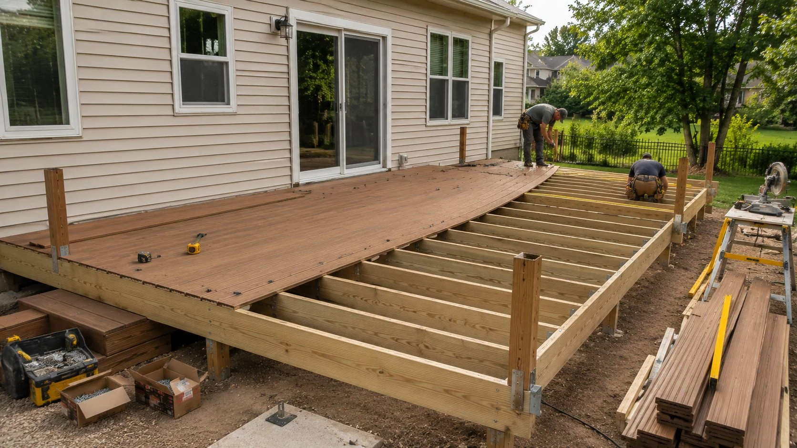
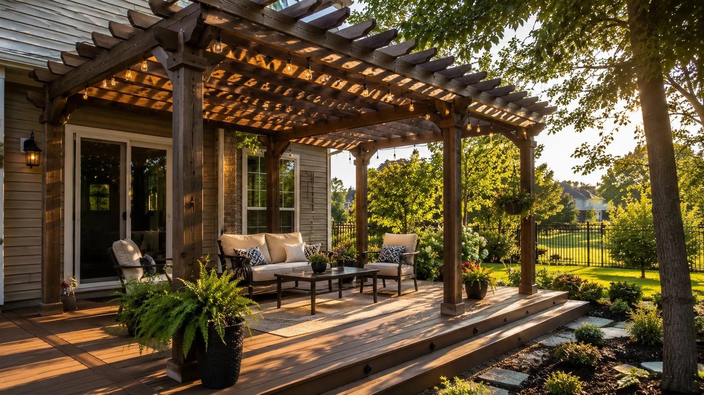
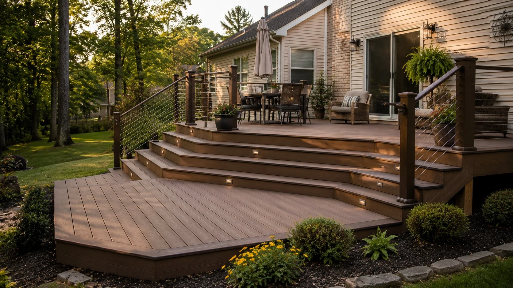
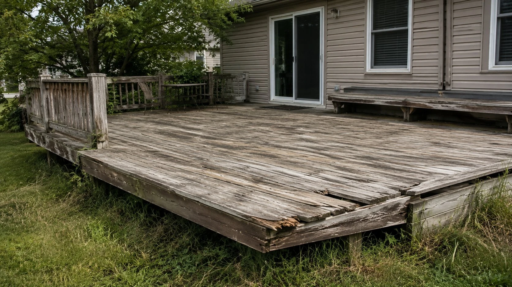
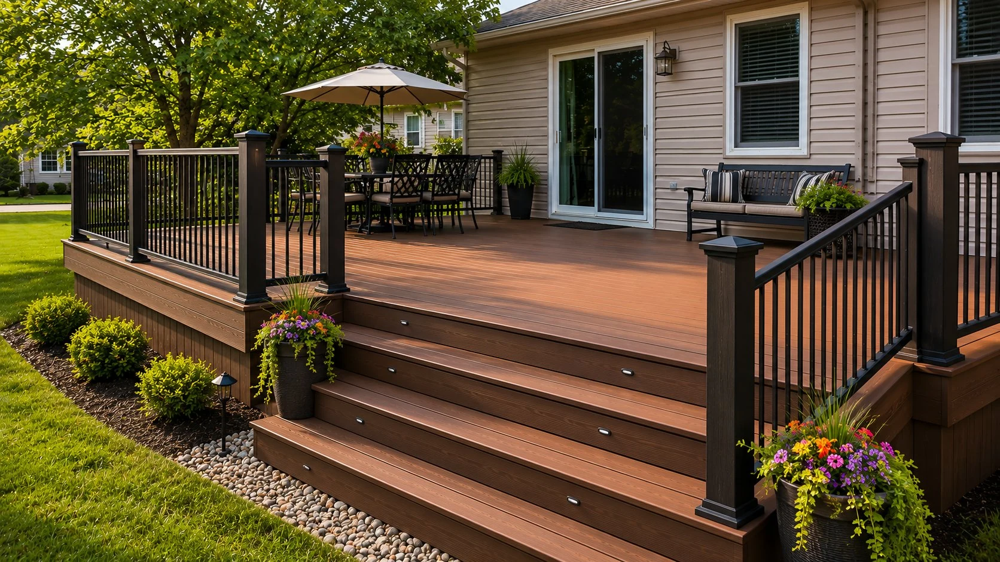
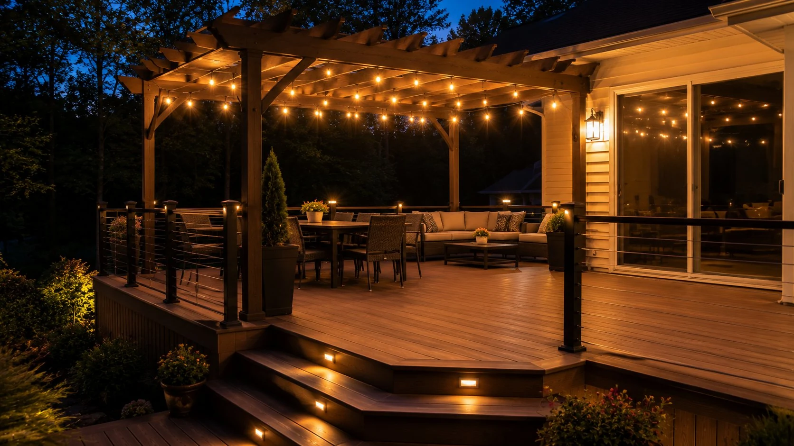
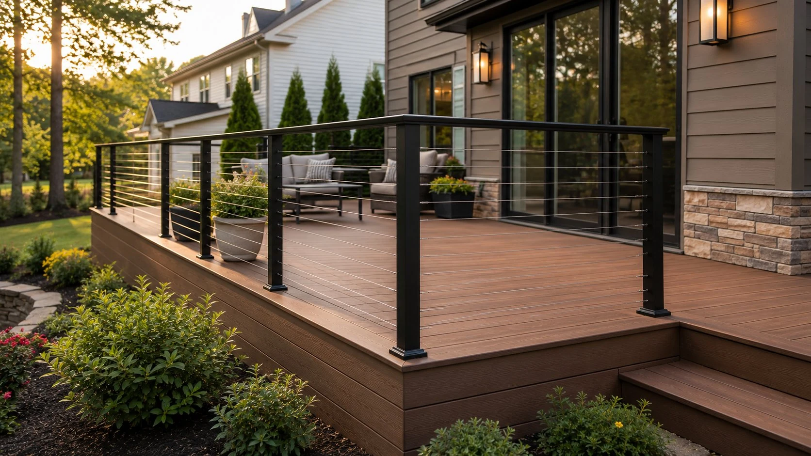
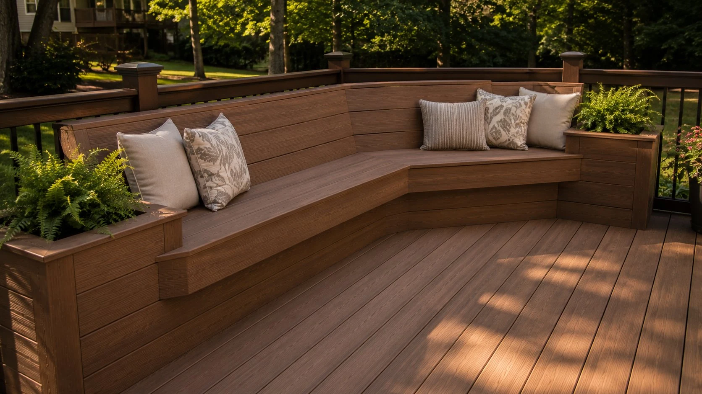
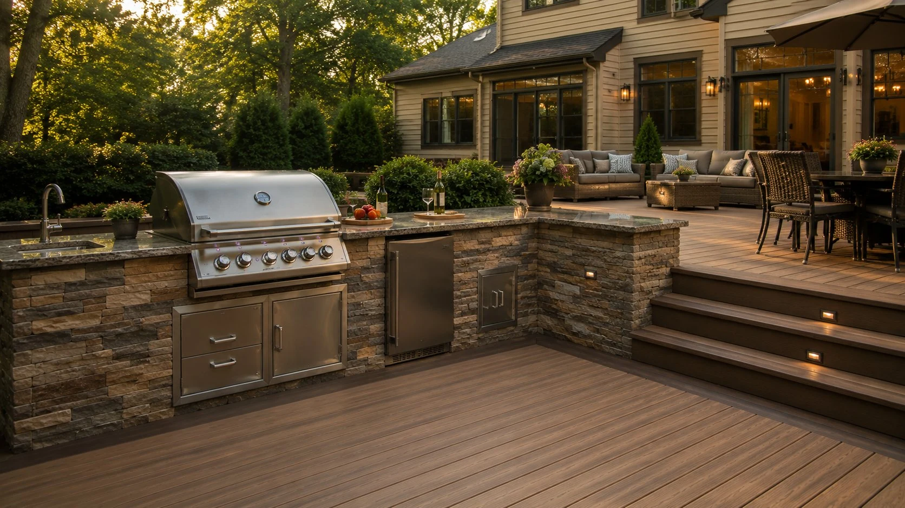

Composite Deck Installation
Trex, TimberTech, Fiberon, and Azek composite decking — low maintenance, 25–30 year warranties, and the look of real wood without the upkeep. Our most popular choice in Pataskala and New Albany.
Learn More →From pressure-treated wood to composite Trex and TimberTech — we build decks that hold up to Ohio's seasons and add real value to your home. Serving Newark, Pataskala, New Albany, Johnstown, Granville, and all of Licking County.
Free Estimate — No Obligation
We respond within one business day and can typically schedule an on-site visit within the week.
We respond within one business day.
We build decks in Licking County. That means concrete pier footings drilled below Ohio's frost line, hardware rated for ground contact, and composite materials chosen specifically because they handle freeze-thaw cycles without warping, cracking, or requiring a full reseal every other spring.
"In our experience with Licking County homes, the biggest mistake we see is inadequate footing depth. Ohio's frost line sits around 32 inches. A deck with shallow footings heaves and shifts — and eventually the whole structure has to come out. We do it right from the ground up."

From first board to final post cap, we handle every phase of your deck project — design, permits, construction, and cleanup.
Trex, TimberTech, Fiberon, and Azek composite decking — low maintenance, 25–30 year warranties, and the look of real wood without the upkeep. Our most popular choice in Pataskala and New Albany.
Learn More →
Pressure-treated Southern Yellow Pine built to last in Ohio's climate. Solid framing, properly spaced joists, and concrete pier footings — built to code and built to hold up for decades.
Learn More →
Rotted boards, failing joists, wobbly railings, and splintering surfaces — we diagnose the real problem and fix it right. We see a lot of boards that have been patched over instead of replaced. We do it right the first time.
Learn More →
Full teardown and rebuild — we remove your old deck, inspect the ledger and structure, pull the permit, and build new. Most Licking County homes we replace have decks 15–25 years old that are past repair.
Learn More →
Attached pergolas, freestanding structures, and covered outdoor living areas — we frame them to match your house and your deck so it all looks like it was meant to be there.
Learn More →
Multi-level decks, built-in seating, cable railing, step lighting, outdoor kitchens — when customers ask us what's possible, the honest answer is: most things. See our gallery for what we've built in Licking County.
View Gallery →01
We come to your property, measure the space, and walk through your options. Written estimate provided — no pressure, no obligation.
02
We file the permit with the appropriate Licking County township or municipality. You don't have to navigate the paperwork — we handle it.
03
Our crew builds to code, on schedule. We don't leave until the inspector signs off and you're satisfied with the result.
From a weathered, unsafe wood deck to a finished composite outdoor living space — here’s what a full replacement looks like in Licking County, Ohio.

Before
AfterCustom decks built throughout Newark, Pataskala, New Albany, Granville, Heath, Hebron, and Johnstown. Every project permitted, inspected, and backed by a written workmanship warranty.




We serve every township and community in Licking County, Ohio. If you're in the county, we come to you.
We hear a lot of the same questions from homeowners in Newark, Pataskala, and across Licking County.
(740) 527-0222 Mon–Fri 7am–6pm | Sat 8am–2pmWe come to your property, measure the space, discuss your material options, and provide a written estimate — no pressure, no obligation. We respond within one business day.
We respond within one business day.
Free estimate, no obligation. Serving all of Licking County, Ohio.